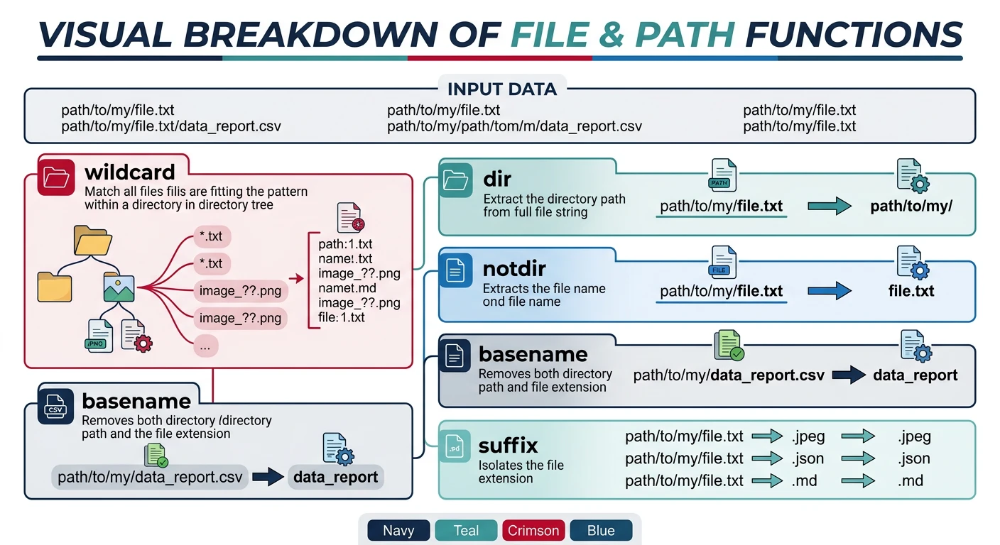
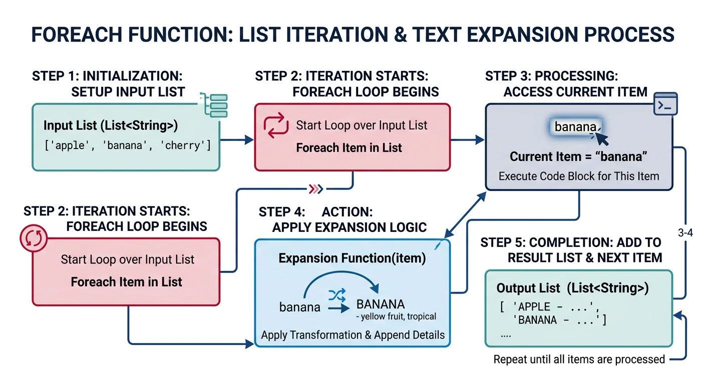
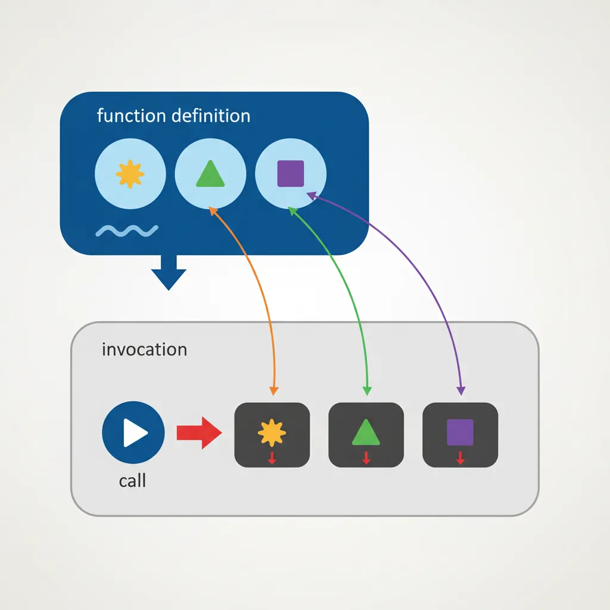
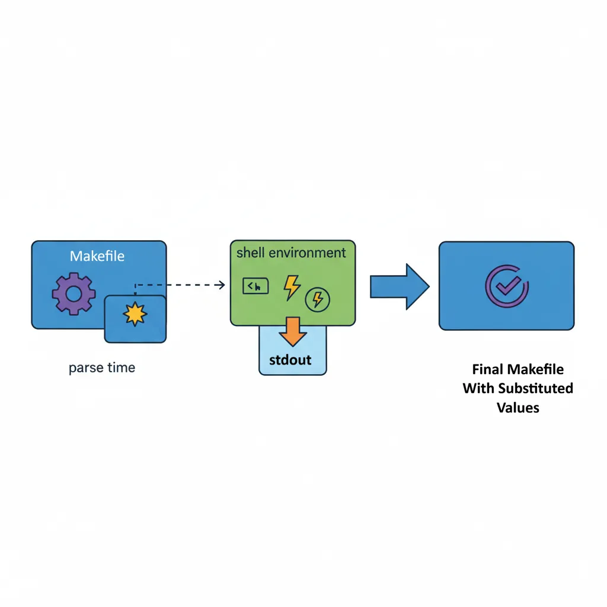

We use cookies to enhance your browsing experience, serve personalized content, and analyze our traffic. By clicking "Accept All", you consent to our use of cookies. See our Privacy Policy for more information.
GNU Make Mastery Part 5: Built-in Functions & Make Language
February 21, 2026Wasil Zafar24 min read
Unlock Make's full expressive power with its built-in function library: string manipulation, file globbing, list processing, user-defined call functions, eval for dynamic rule generation, and $(shell) for system integration.
Part 5 of 16 — GNU Make Mastery Series. With variables (Part 3) and pattern rules (Part 4) under your belt, we now explore the Make standard library — functions that transform strings, discover files, and generate rules dynamically.
Make functions are called with $(function arg1,arg2,...). Note: commas and spaces inside arguments must be escaped — assign them to variables first if needed: COMMA:=, and SPACE:= $(EMPTY).
Make function call syntax: $(function arg1,arg2,...) — arguments separated by commas
LIST := banana apple cherry apple date banana
SORTED := $(sort $(LIST)) # → apple banana cherry date (deduplicates!)
WORDS := $(words $(LIST)) # → 6
FIRST := $(word 1,$(LIST)) # → banana
SUBLIST := $(wordlist 2,4,$(LIST)) # → apple cherry apple
# strip — remove leading/trailing whitespace
VAR := $(strip lots of spaces ) # → lots of spaces
Sample Source Files
Self-contained examples: Built-in function examples reference main.c, utils.c, net.c, and server.c. These trivial stubs let you paste any Makefile snippet, run make, and see the function expand correctly.
main.c
/* main.c — entry point */
#include <stdio.h>
#include "utils.h"
int main(void) {
utils_greet("Built-in Functions");
return 0;
}
Performs shell-style glob expansion at parse time. Unlike a shell glob in a recipe, this works in variable assignments and prerequisites.

$(wildcard) performs glob expansion at parse time to discover source files automatically
# Discover all source files automatically — no manual list needed
SRCS := $(wildcard src/*.c) # → src/main.c src/utils.c ...
SRCS += $(wildcard src/**/*.c) # requires GNU Make 3.81+
# Guard against empty wildcard (avoid "no input files" compiler error)
ifeq ($(SRCS),)
$(error No .c files found in src/)
endif
$(foreach var,list,text) iterates over a whitespace-separated list, expanding text with $(var) set to each word. The results are space-joined.

$(foreach) iterates over each word in a list, expanding the template text for each element
PLATFORMS := linux macos windows
TARGETS := $(foreach p,$(PLATFORMS),build/$(p)/myapp)
# → build/linux/myapp build/macos/myapp build/windows/myapp
# Generate -I flags for all subdirectories of include/
INCDIRS := $(wildcard include/*)
CFLAGS += $(foreach d,$(INCDIRS),-I$(d)) # -Iinclude/core -Iinclude/net ...
# Create build directories for all modules
MODULES := core net io ui
BUILDDIRS := $(foreach m,$(MODULES),$(BUILDDIR)/$(m))
.PHONY: makedirs
makedirs:
$(foreach d,$(BUILDDIRS),mkdir -p $(d);) # semicolons chain commands in one shell
User Functions: call
Define a reusable macro with define using positional parameters $(1), $(2)…, then invoke it with $(call name,arg1,arg2,...).

User-defined functions use positional parameters $(1), $(2)... and are invoked via $(call)
# A function that produces -I flags from a directory list
include_flags = $(foreach d,$(1),-I$(d))
# A function that maps sources to object paths
src_to_obj = $(patsubst $(1)/%.c,$(2)/%.o,$(3))
# Usage
INCDIRS := include vendor/include
CFLAGS += $(call include_flags,$(INCDIRS))
OBJS := $(call src_to_obj,src,build,$(SRCS))
# Recursive function: generate per-module build rules dynamically
define MODULE_RULES
$(2)/$(1).o: src/$(1).c
$(CC) $(CFLAGS) -Isrc/$(1) -c $$< -o $$@
endef
# NOTE: $$< and $$@ use double-dollar to survive two expansion rounds:
# 1st by $(call) → $< $@
# 2nd by $(eval) → actual automatic variable values at recipe time
MODULES := core net ui
$(foreach m,$(MODULES),$(eval $(call MODULE_RULES,$(m),$(BUILDDIR))))
eval & value
$(eval text) parses text as Makefile syntax — letting you generate rules and variable assignments programmatically. $(value var) returns the raw (unexpanded) value of a variable.
# Generate a build rule for each listed binary
BINARIES := server client admin-tool
define BINARY_RULE
$(1): $(1).o common.o
$(CC) $(LDFLAGS) -o $$@ $$^
endef
$(foreach bin,$(BINARIES),$(eval $(call BINARY_RULE,$(bin))))
Escape rule: Inside a define block used with $(eval $(call ...)), dollar signs in recipe lines must be doubled ($$@, $$<) because the text goes through two rounds of expansion: first by $(call), then by $(eval).
$(shell) — System Integration
$(shell command) executes a shell command at Makefile parse time and substitutes its output (with newlines converted to spaces). Use it sparingly — it runs on every make invocation.

$(shell) executes a command at parse time and substitutes the captured stdout into the Makefile
# Get the current git commit hash for embedding in the binary
GIT_HASH := $(shell git rev-parse --short HEAD 2>/dev/null || echo unknown)
VERSION := $(shell cat VERSION 2>/dev/null || echo 0.0.0)
BUILD_DATE := $(shell date -u +%Y-%m-%dT%H:%M:%SZ)
CFLAGS += -DGIT_HASH='"$(GIT_HASH)"'
CFLAGS += -DVERSION='"$(VERSION)"'
# Detect the number of CPU cores for -j
NPROC := $(shell nproc 2>/dev/null || sysctl -n hw.ncpu 2>/dev/null || echo 4)
# Discover all headers in the system
SYS_INCLUDES := $(shell pkg-config --cflags openssl 2>/dev/null)
SYS_LIBS := $(shell pkg-config --libs openssl 2>/dev/null)
Hands-On Milestone
Milestone: Write a self-configuring Makefile that auto-discovers all source files, constructs include flags dynamically, embeds git metadata, and generates per-module build rules.
# --- Try it ---
make info # display auto-discovered sources, include dirs, git hash
make # compiles src/*.c → build/*.o → links myapp
make # nothing rebuilt (up-to-date)
make clean # remove build artifacts
Continue the Series
Part 6: Conditionals & Configurable Builds
Use ifeq, ifdef, and OS detection to write portable, multi-configuration Makefiles for debug, release, and cross-platform builds.